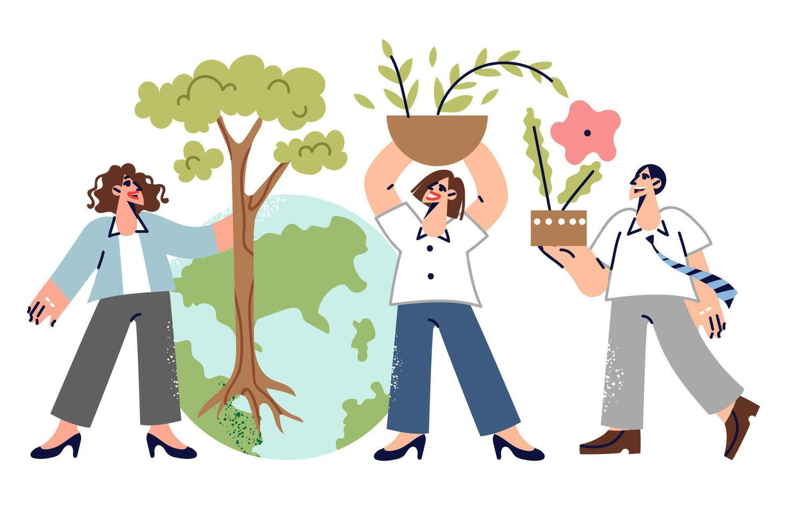

Энергосбережение
Отключаю из сети ненужные электроприборы
Владимирова Алиса

Отключаю из сети ненужные электроприборы
Хожу на Гаражку
Отключаю воду во время чистки зубов и мытья посуды
Сбор макулатуры, пластика и батареек каждую субботу в библиотеке ТГУ
25 октября уборка Буревестника. Приходите, будет чай :)
Проверьте свою норму потребления воды за прошедшую неделю.